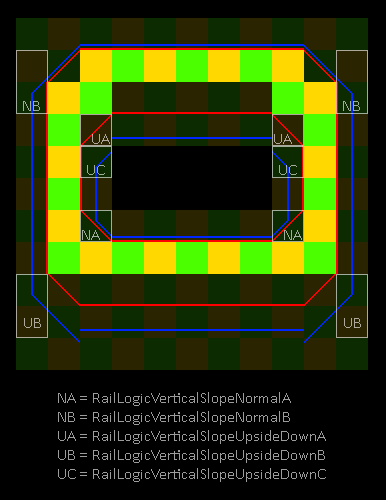

| Class | Description |
|---|---|
| RailLogic |
Handles how a minecart travels on top of a rail
|
| RailLogicAir |
Handles movement of a minecart that is flying through the air
|
| RailLogicGround |
Handles the rail logic of a minecart sliding on the ground
|
| RailLogicHorizontal |
Horizontal rail logic that does not operate on the vertical motion and position
|
| RailLogicSloped |
Handles minecart movement on sloped rails
|
| RailLogicVertical | |
| RailLogicVerticalSlopeBase | |
| RailLogicVerticalSlopeNormalA |
Handles the rail logic of a sloped rail with a vertical rail above it.
 |
| RailLogicVerticalSlopeNormalB |
Handles the rail logic of a sloped rail with a vertical rail below it.
|
| RailLogicVerticalSlopeUpsideDownA |
Handles rail logic of an upside-down slope with a vertical rail below it.
|
| RailLogicVerticalSlopeUpsideDownB |
Handles rail logic of an upside-down slope with a vertical rail above it
|
| RailLogicVerticalSlopeUpsideDownC |
Handles rail logic of an upside-down slope with a vertical rail below it.
|